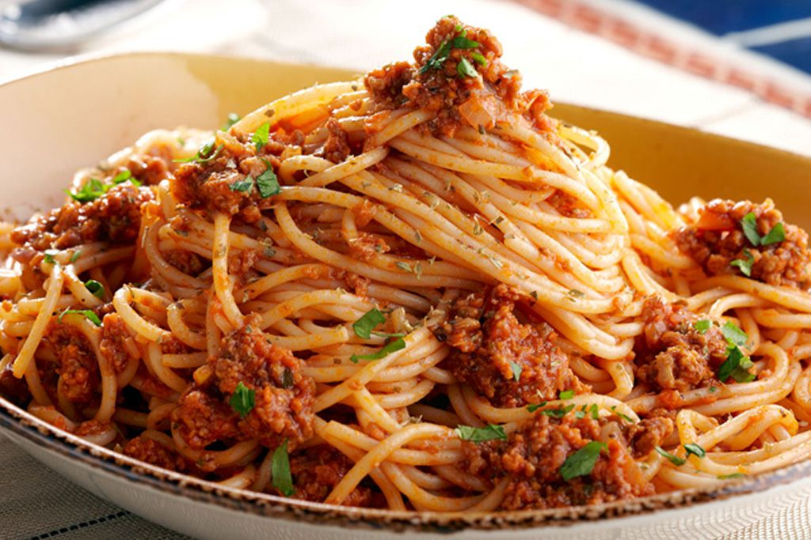

سرآشپز نوآور
با بیش از ده سال تجربه در آشپزی حرفهای، منوی ما را به ترکیبی از غذای اصیل و خلاقیت تبدیل کرده است.
رستوران جواد با هدف ارائه غذایی خوشطعم و احساسِ راحتی برای مهمانان عزیز شروع به کار کرد. ما به باور آن رسیدهایم که هر وعده غذا باید یک خاطره شیرین بسازد.
از منوی صبحانه گرم تا شام لذیذ، تلاش میکنیم تجربهای متنوع و بهیادماندنی به همراه خدمت سریع و دلپذیر ارائه دهیم.
با بیش از ده سال تجربه در آشپزی حرفهای، منوی ما را به ترکیبی از غذای اصیل و خلاقیت تبدیل کرده است.

پرسنل ما برای هر سرو غذا، بهترین بستهبندی و پشتیبانی را فراهم میکنند تا شما همیشه احساس عالی داشته باشید.